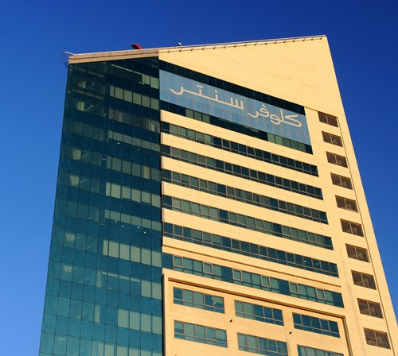

Introducing a new concept to Kuwait’s private health care sector; Clover Tower is a medical facility specifically designed to accommodate the widest selection of clinics in Kuwait in one building. The last decade in Kuwait has experienced an unprecedented growth in the private health care sector. Private hospitals and clinics have provided much needed facilities for the community. However despite this growth, Kuwait’s private health care sector is still in need of:
Clover Tower is located in the heart of Jabriya, Kuwait — easily accessible and centrally positioned to serve the surrounding neighborhoods.
The tower offers an integrated medical ecosystem under one roof. Its unique triangular shape was purposefully designed to enhance internal layout flexibility and ensure optimal use of natural light. Hallways are wide, clinics are strategically laid out, and the design promotes a sense of openness and efficiency for both doctors and patients.

Clover Tower is proudly managed by Beyond Limit Property Management Corporation. Our team ensures that all maintenance, cleanliness, safety, and support services run smoothly. We are dedicated to supporting both tenants and visitors with top-tier services, modern facility management tools, and transparent communication.